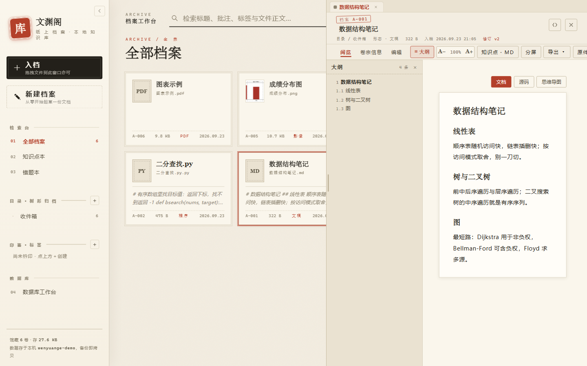
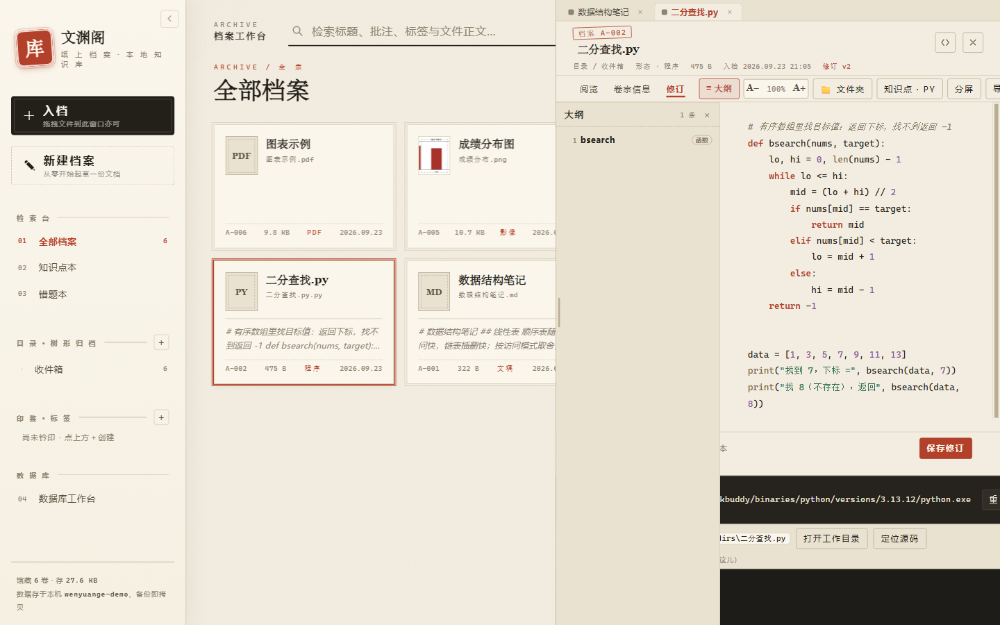
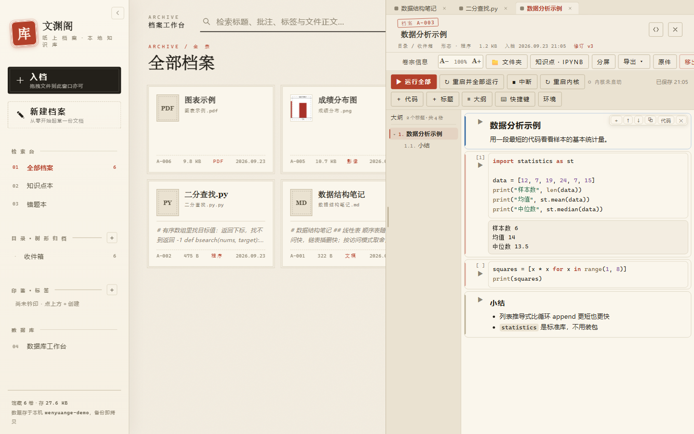
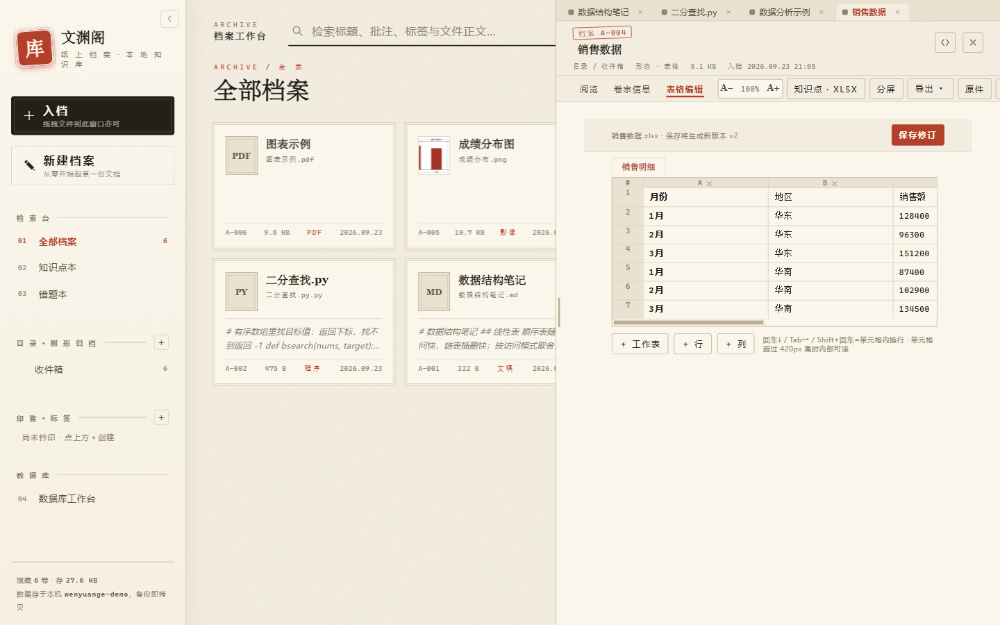
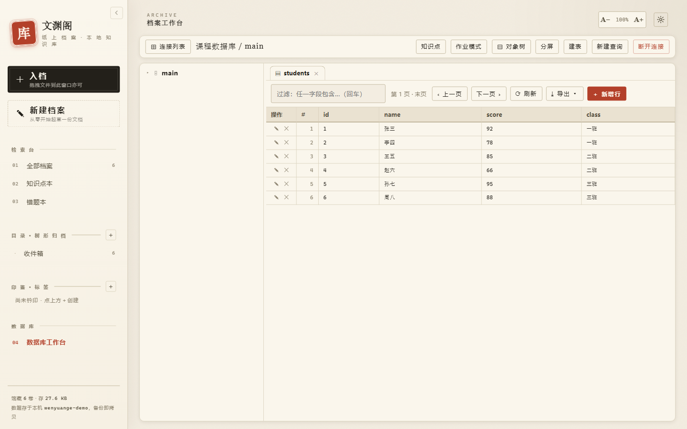

界 面 一 览
先说清楚它长什么样
下面是软件的真实界面（当前版本 v1.7.2，不是什么演示稿）。一台电脑上把 文档、表格、幻灯片、PDF、图片、代码、笔记本、数据库都放进同一个界面 —— 读完这一页，你就知道它到底能替掉你桌面上的哪几个窗口。

档案工作台 —— 五十余种格式，放进来看见就能读
左侧是档案列表：按「钤印标签 / 卷册 / 最近入档」归类，每份档案带类型与大小。
右侧是阅览栏：Markdown 与富文本按原样排版；文本与代码档案左侧还有一道
「≡ 大纲」，按标题自动分级编号（## → 1.1，其下 ### → 1.1.1），
点一下正文就跳到那一节。代码档案认的是 def / class / CREATE TABLE 这类定义行，
后面还标着是函数、类还是表。

代码运行 —— 落笔即见其果
选中解释器按一下「▶ 运行」，结果就在下方。关键字彩色、缩进、按 Tab 唤起补全 （导包后的包内成员、你自己定义过的名字都会列出来）。
出错一律译成中文：第几行第几列、什么毛病、该怎么改；原始英文报错折叠备查。

笔记本（.ipynb）—— 像 Jupyter 一样一格一格写
打开就是笔记本：单格运行、格间共享变量，输出与插图留在格子里，
格号 In [1] 跟着走。
Jupyter 那套快捷键都在（a b dd x c v z、Enter / Esc、m / y），
格前那道短竖条会报状态：蓝 = 选中，绿 = 编辑中。

表格编辑 —— 就地改，不用导出再用别的软件开
单元格直接改，行列随时增删；长内容自动撑高，不会憋在一条窄缝里。
「阅览 / 修订」两个标签随时对照，改完即存。

数据库工作台 —— 直接把库连进知识库
支持 MySQL / MariaDB、PostgreSQL、SQL Server、SQLite，内嵌终端还能 SSH 远连服务器。
左侧是连接与表树，点开就是数据；写 SQL 时结果直接以表格呈现。
库房报错同样译成中文并在 SQL 里标出出错位置 —— 表名拼错、列不存在、约束冲突，一眼看清。
FROM students s 之后敲 s.，会列出这张表的真实列名。
看完了？软件本体就一个安装包，装了就能用。
取 文 渊 阁 于 案 头